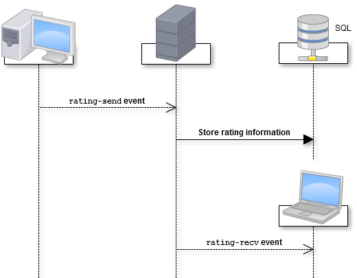
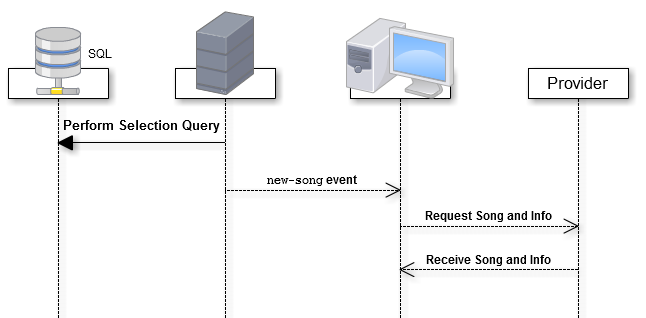

GroupTune
ACM SDC 2014 Presentation
Will Nayes Jon Steffl
team gcc
Select A Topic
The Goal
Create a web platform that friends can use to create, develop, and promote their own radio station.
Station Creation
Listeners pick a memorable name to distinguish their channel.
A genre mix is chosen to seed future song selections.
Station Development
A channel creator promotes listeners into influencers, who have say in reviewing songs.
The currently playing song is given thumbs up or thumbs down by active influencers to shape future song selection.
Station Promotion
A station can be as public or private as the creator wants.
Facebook integration provides listeners means to share channels with their friends.
UI Overview
We wanted our UI to be as intuitive as possible for as many people as possible. As such, we used an approach of "Less is More" and tried to keep the design very clean and simple. As a result, the users only see what they need to. There are no uneeded menus or options taking up screen space. This leads to a very enjoyable experiance for the user.
Facebook Login Dialog
Advantages
- Listeners will not need to create separate accounts for our service.
- Immediate access to listeners' profile pictures and names.
- We can display the stations liked by a listener's friends.
Database Design
System Architecture
- Server Software
- API Design
- Scalability
Software
Primary data storage will use a relational database, likely MySQL. Volatile information will be accessed using the key-value store Redis.
To support live notifications, chat, and song synchronization, an API powered by Node.js using Socket.IO will be used.
API Features / Concerns
- Authentication
- Chat
- Song Sync / Selection
- DMCA Conformity
Authentication
By tying user authentication to the Facebook Login API, the complexity of managing user accounts is limited.
We still need to manage socket sessions when listeners visit a channel.
Establishing a Connection
Closing Connections
As each listener leaves the channel, the volatile session and socket information will be removed.
When all sockets for a given channel have been closed, any song selection and sync actions will be canceled.
Chat
Listeners will be able to participate in a live chat with other authenticated members.
TODO INSERT SOME UI HERE ?
Sending and Receiving

Presence Status
Ratings
Listeners will also receive reviews from others in their chat feed.
TODO UI HERERating Events
Song Sync
A critical aspect to the experience is keeping all listeners on the same song and at approximately the same listening progress.
Having a socket connection facilitates this time sensitive demand.
Song Broadcasting
Spotify
- Existing library of more than 20 million songs - unreasonable to duplicate on our infrastructure.
- External architecture handling audio streaming demands.
- We will initially scrape song genre and other information.
DMCA Conformity
- Listeners react to song selections rather than selecting them.
- Song selection algorithm accounts for artist and album restrictions.
- Programs are dynamic and not pre-announced.
- Spotify provides reliable streaming security and region restrictions.